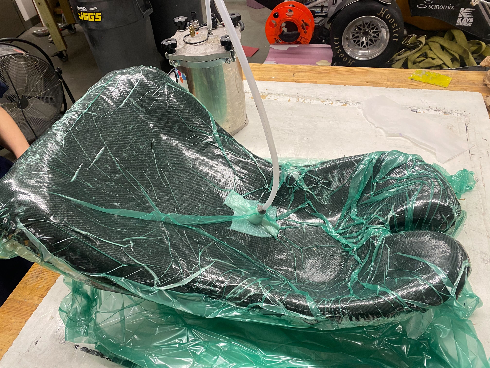
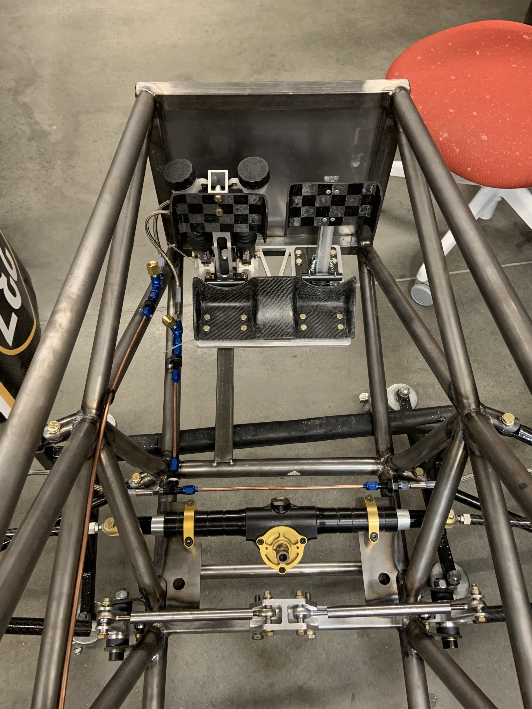
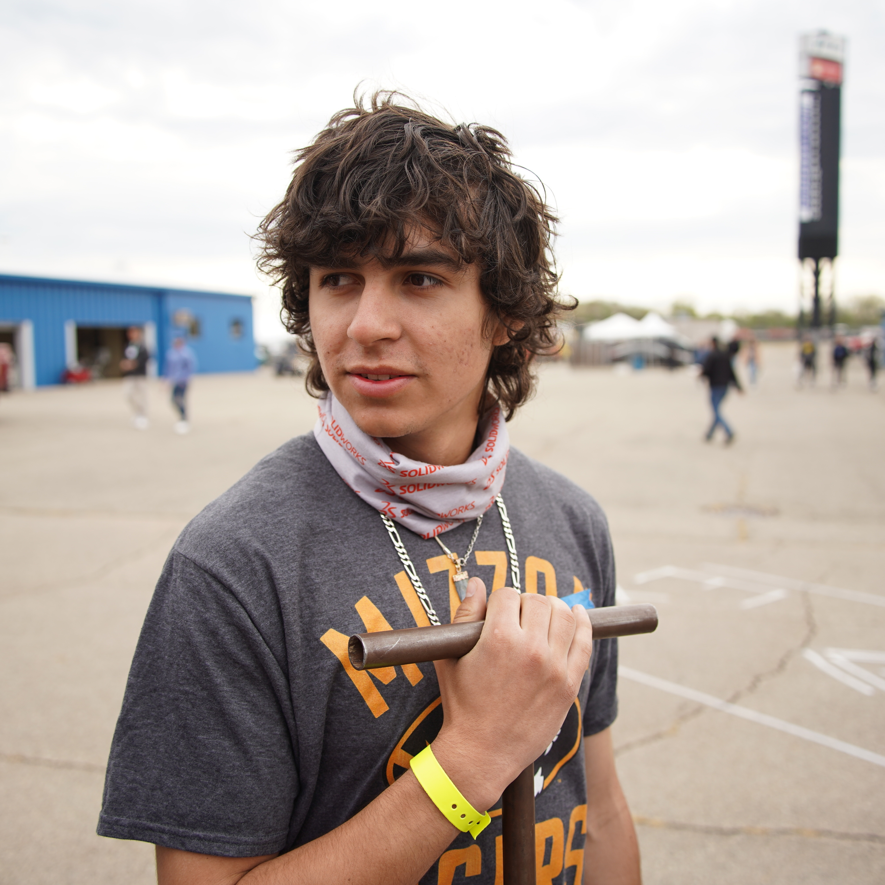

This subsystem encompasses brakes, controls, & ergonomics. We use Wilwood brake calipers with laser cut rotors. Our steering wheel has paddle shifters for sequential pneumatic shifting. Cockpit design is a new goal for this season, specifically making it more adjustable for each driver. We currently have an adjustable pedal chassis with carbon fiber foot cups.



Max is a junior Mechanical Engineering and Economics student. He joined the team in the Fall 2024. Since joining Max has help manufacture many parts of our cars and designed car #115's ergonomic steering wheel. Max is also is our team's current treasurer.
- Max Pedreros